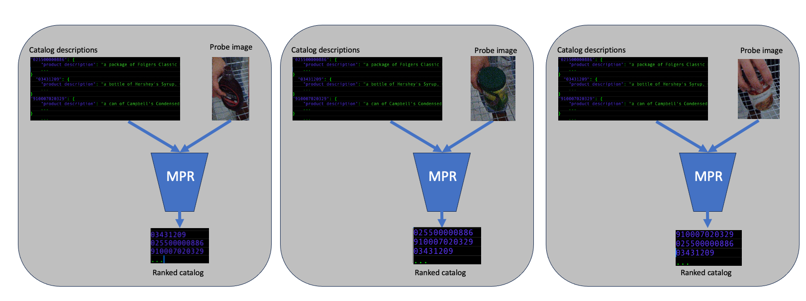

Dataset Challenges
As part of this workshop, two challenge tracks will be made available from the Grocery Vision 2023 datset consisting of real-world, physical retail data collected in typical grocery store environments. These challenge datasets contain anonymized individual shopping actions collected with a GoPro camera mounted to a standard US shopping cart. These challenges are:
Track 1: Video Temporal Action Localization (TAL) and Spatial Temporal Action Localization (STAL):

The TAL and STAL challenges aim at localizing products associated with actions of interest in video. The environment the video is captured in is a physical retail grocery store and the capture system consists of a camera mounted on a regular shopping cart looking inwards at the basket volume. The TAL challenge will consist of training a model that localizes temporally, (along the time axis) the actions of interest in each video in the dataset. STAL on the other hand will involve localizing the product associated with the action spatially and temporally in the video. The action of interest in this challenge is one of three common place actions performed by people shopping with grocery carts; Take: Putting a product into the basket, Return: Removing a product out of the basket and Rummage: Moving products around in the basket. We will evaluate the models performance based on frame-mAP (temporal localization) and tube-mAP (spatio-temporal localization).
In this task, participants will be provided with 73,683 images and annotation pairs for download as training set.
Track 2: Multi-modal Product Retrieval (MPR):
The goal of MPR challenge is to retrieve the product identity from an open pool of candidate products. Participants will be given a training dataset consisting of (i) images for different products, and (ii) textual description of the products, and are expected to design methods to accurately retrieve the product identity by measuring similarity between images and textual descriptions. For evaluation, a held out set of probe images and a pool of textual description of catalog products will be passed to the model. The model is expected to output a ranked list of catalog products based on the similarity between images and descriptions. We use Cumulative Matching Characteristics (CMC) to evaluate performance of each solution.
Download the dataset:
This dataset is released under CC BY-NC 4.0 license. Please review the license and an email to retailvision4challenge@amazon.com to receive a link to download the dataset. Please include your (1) name, (2) email (affliation email, not @gmail etc.), (3) purpose of using the dataset. We will respond as soon as possible.
Submit results:
To participate in the evaluation, please submit the files necessary to run inference with your method. It will be runned on held out testsets to benchmark with the other submissions.